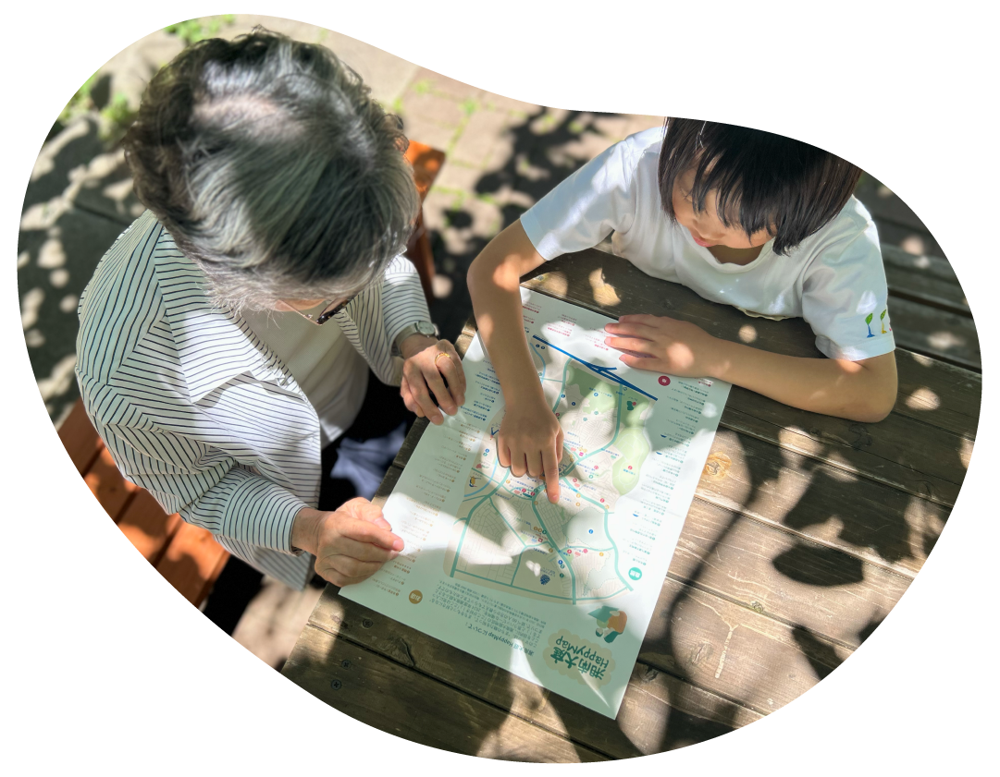

Case
制作事例
Map Design
マップ制作湘南大庭HappyMap
After | 完成したもの

地域まちづくりマップ制作
地域の方々から集まった53か所の「お気に入りの場所」を、 まちの魅力が伝わる一枚のマップにまとめました。
Before
制作前の課題
「まちの魅力を知って、もっと好きになる」ことを目的に、 地域の方々から集まった「お気に入りの場所」を、 1枚のマップとしてまとめたいというご相談でした。地域情報の量が多く、1枚のマップにまとめることが課題でした。
制作の背景
湘南大庭地区は、30年前に整備された住宅地で、 現在は高齢化が進む一方、地域活動も盛んなエリアです。 年1回の「ふるさとまつり」では、世代を超えて地域の方々が参加されており、 地域への愛着やあたたかさを感じました。
Process
制作の工夫
郷土づくり推進会議のMAP部会の皆さまの月1回の議事録をご共有いただき、 修正箇所などの確認を行いながら作業を進めました。
タイトルに手書き文字を取り入れることでマップ全体に柔らかい印象を与えつつ、 若い世代にも親しみやすい色合いを心がけました。
掲載情報を事前にExcelへまとめていただくことでスムーズに作業を進行。 情報が集中する地域についても、視認性を損なわないよう レイアウトや配置を意識して作成しています。
Result | 制作後の広がり
地域の方々から集まった53か所の「お気に入りの場所」が、 1枚のマップになりました。 イベント配布用として100部印刷された後、 市民センターのご協力により1,000部増刷。 現在は、地域資料として図書館にもご登録をいただき、 どなたでも手に取ることができるようになりました。 大学生からは「市外から転居してきた人にもわかりやすい」 という声をいただきました。 また、地域情報を調べに図書館を訪れた小学生の男の子にも、 地元の地図があることを喜んでいただけたそうです。
Client's Voice
クライアントからのメッセージ
梅原さんは、制作前に実際に地域を訪れ、まちの雰囲気を丁寧に感じ取ったうえでデザインしてくださいました。細部まで心を込めた誠実な仕事ぶりと高いデザインカにより、子どもからお年寄りまで多くの方に親しまれる、おしゃれで温かみのあるマップが完成し、感謝でいっぱいです。
湘南大庭地区郷土づくり推進会議（まちづくり会議・♡VER 湘南）MAP部会
- 制作内容
- 地域まちづくりマップ
- 担当範囲
- 情報整理・構成・デザイン
- 対象
- 湘南大庭地区の地域住民
Other Cases
ほかの制作事例を見る
制作カテゴリーから事例を探す
← All Cases 実績一覧に戻る